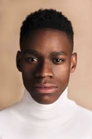

Portrait Photography

A portrait photo is a style of photography that almost always involves people as the subject—except in the case of pet photography— shot in various backgrounds. In some instances, backdrops add to the picture, and in other instances, the subject is the star of the show and backdrops are intentionally kept minimal. A portrait photo is a style of photography that almost always involves people as the subject—except in the case of pet photography— shot in various backgrounds. In some instances, backdrops add to the picture, and in other instances, the subject is the star of the show and backdrops are intentionally kept minimal. A portrait photo is a style of photography that almost always involves people as the subject—except in the case of pet photography— shot in various backgrounds. In some instances, backdrops add to the picture, and in other instances, the subject is the star of the show and backdrops are intentionally kept minimal. A portrait photo is a style of photography that almost always involves people as the subject—except in the case of pet photography— shot in various backgrounds.
Fashion Photography
.
A combination of product, portrait and even fine art photography, fashion photography is a genre where art and commerce meet. “Fashion photography is the way a photographer uses their own eye and perspective to highlight, curate or speak to anything in the fashion industry,” says photographer Flo Ngala. “There’s such a wide range of fashion photography — ecommerce style with studio lighting, shoots outside in the desert or the streets of New York City.” The essence of fashion photography is storytelling. And the possibilities are endless when it comes to how you tell it. “The most successful fashion photographers, everything they do has a story,” says photographer Grace Rivera. “And the best part is, you can change the narrative any time you want. There are no rules except to have a story in mind.” Delve into these tips from experts to start exploring this art form.
Sports Photography

A combination of product, portrait and even fine art photography, fashion photography is a genre where art and commerce meet. “Fashion photography is the way a photographer uses their own eye and perspective to highlight, curate or speak to anything in the fashion industry,” says photographer Flo Ngala. “There’s such a wide range of fashion photography — ecommerce style with studio lighting, shoots outside in the desert or the streets of New York City.” The essence of fashion photography is storytelling. And the possibilities are endless when it comes to how you tell it. “The most successful fashion photographers, everything they do has a story,” says photographer Grace Rivera. “And the best part is, you can change the narrative any time you want. There are no rules except to have a story in mind.” Delve into these tips from experts to start exploring this art form.
Image Gallery


